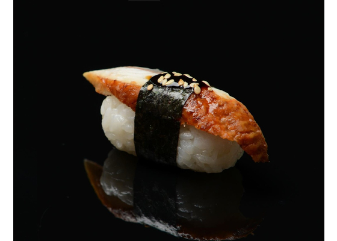
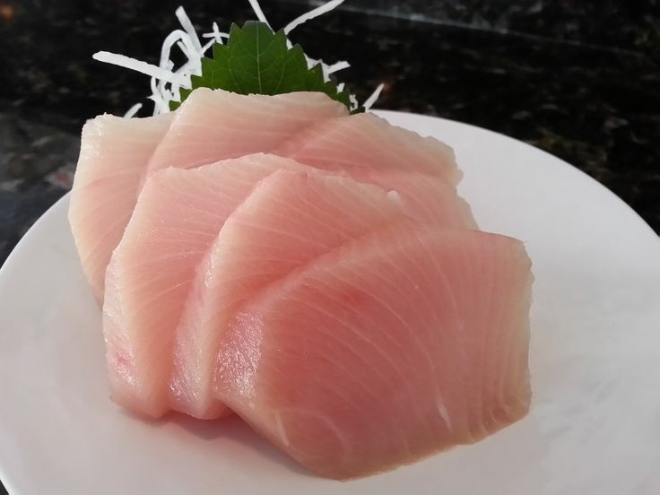

|  |
УнагиУнаги — это японские суши с угрем и это неотъемлемая часть японской кухни. Унаги имеет аппетитный вкус, особенно в маринованном виде и на гриле. |
|  |
ХамачиСуши хамачи — разновидность суши, основным ингредиентом которых является желтохвостая рыба (хамачи). |